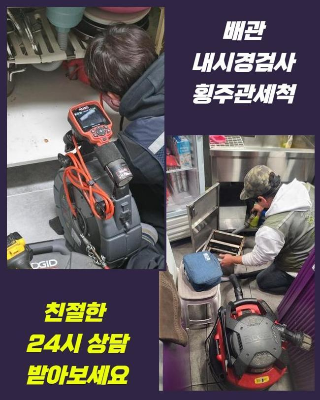
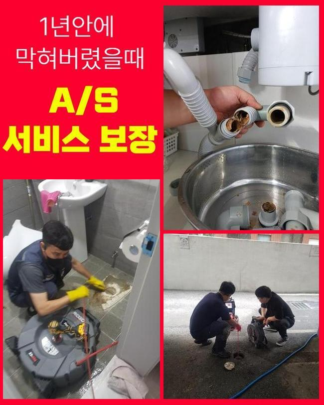
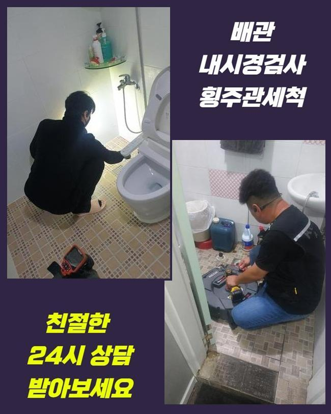
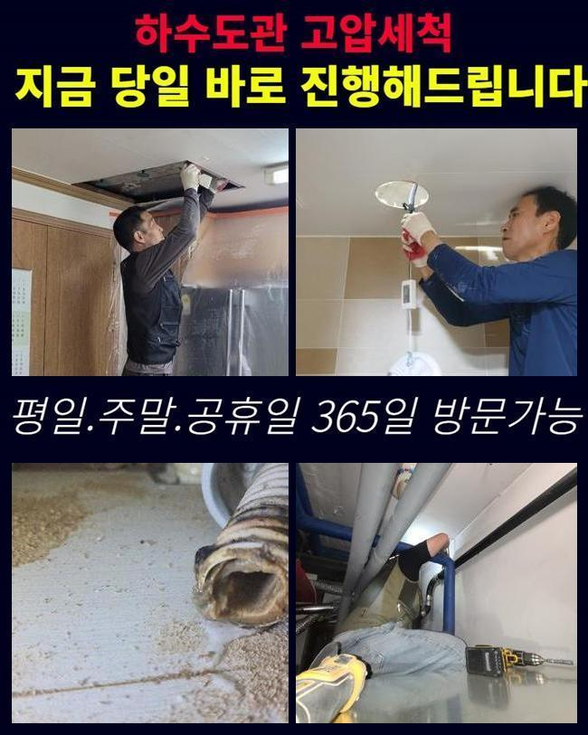
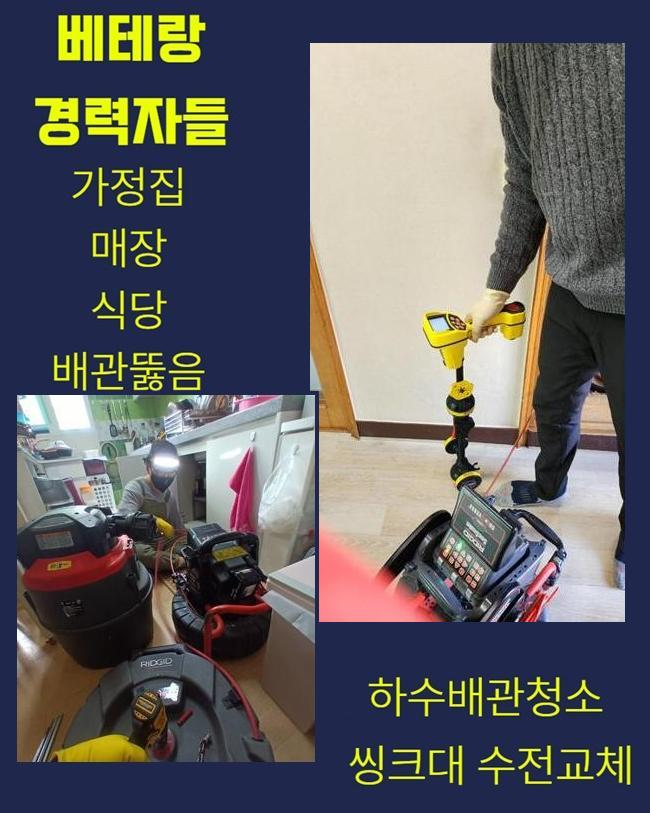
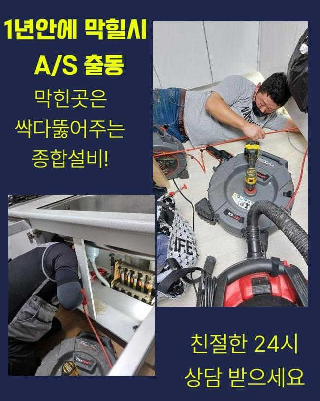
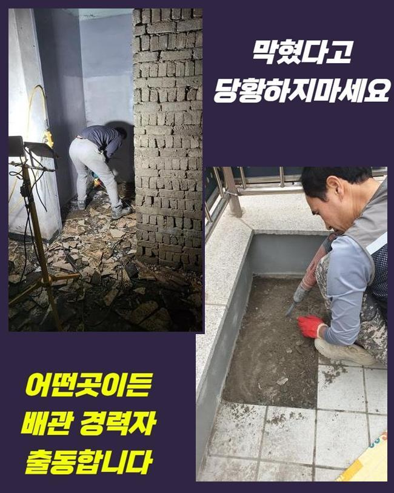

🏠 광주 중대동세탁기배수구막힘 목동 하수관고압세척 설비
광주 목동 싱크대막힘 전문 시공 후기

📋 작업 개요
- 위치: 광주 목동, 목동, 광주
- 서비스 유형: 싱크대막힘, 배관막힘, 고압세척, 설비공사, 악취차단
- 작업 일시: 2025. 5. 30. 12:03
- 업체명: 하수구수사대 (010-5615-2118)
🔍 문제 상황
광주 중대동세탁기배수구막힘 목동 하수관고압세척 설비
사람들이 사는 빌라나 오피스텔에서 배수시설 이용이 힘들다면 많은 고통을 마주하게 될텐데요
그리고 근처에 수리업체를 찾아 고치려 계획하시는 고객님들이 많아요
그러고 나서 분명한 동기를 발견하지 못한채 미세하게 배수만 될 수 있도록 만든다음 끝내는 업체가 많아서 재발사태가 생기고 있답니다
금번 출장장소는 아파트내 개수대 정체현상으로 의뢰하신 건이었답니다
단지내로 들어와서 연락을 드리니 의뢰자께서 바깥에 업무를 보고 있으셨습니다
그리고 즉각 메시지를 통해서 비번6자리를 보내셨고 깔끔하게 수선을 부탁한다고 하셨네요
업무가 바쁘신 경우에 이런 요구를 하는 의뢰자분들도 있으세요
노후화된 주거지는 일년에 한번 이상은 배수관정비를 해야 급작스런 사태가 일어나지 않는답니다
방문지는 1년전 욕실배관 고장으로 내방했던 적이 있답니다
그때에 작업내용에 만족해하셨고 저장하셨다가 이번 고장상황에서 작업의뢰를 주셨습니다
수리를 마칠무렵 의뢰자께 개수대도 빈번히 물막힘이 발현되는 곳이기에 전조현상이 보였을 시 대응방안은 안내해드린 기억이 있습니다

🔎 원인 분석
💡 전문가 진단: 정밀 진단 장비를 사용하여 슬러지의 고착 여부를 판명하고 타격/세척 작업을 실시했습니다.
그후 고객님은 그 방법으로 수리를 시도했지만 별다른 변화가 없어 진단을 받아보기로 결정했다고 하셨죠
해당되는 지점은 손님의 빠른 상황판단으로 지체없이 방문드려 스케일링을 수행할수가 있었습니다
즉각적 수리가 주된 근거는 배관의 정체문제점이 점차적으로 더욱더 안좋은 모습으로 발전하기 때문이랍니다
사태가 커져버리면 공사시간이 길어질뿐만 아니라 공사비도 올라가기 쉽습니다
개수대막힘이 촉발되면 물빠짐이 일어나지 않기에 불편을 유발하며 점차적으로 악취도 퍼질수 있어요
이런 상황은 공간의 활용성을 저하시키고 위생적이지 못한 환경을 불러올수 있으므로 빠르게 처치하는것이 옳습니다
배수관 정체는 전조증상 없이 생길수 있고 비나 눈이 내리거나 긴기간 이용하지 않았다면 한층더 잦게 올라오게 됩니다
주방시설물로 이동해 막힘의 이유를 조속히 파악하기 위하여 일단 탐지스케일링을 시행했어요
비슷한 증상을 생각했을때 외관상으로도 정체공사를 대부분 간파할수 있죠
그러나 그것만으로는 정밀한 사태파악은 힘드니 내시경cctv로 깊이있는 관찰을 실시할 필요가 있습니다
일단은 싱크대의 근방에 오손된 자취가 많았고 크고작은 잔재들이 관을 차단한 상태였으므로 석션기기를 활용하여 배관초입 부분을 정리하였습니다
그후 배관 내부를 파악하려 내시경장비를 투입해서 조사하기 시작했죠
내시경설비로 확인해보니 하수관 중반부에 기름때를 비롯하여 다양한 잔재들이 누적되어 있었답니다

🔧 작업 과정
배관안에 상존하전 잔존물들과 뒤얽혀서 길목이 차단된 것이었고 석회덩어리가 곳곳에 자리잡고 있어서 한층더 물의 흐름을 힘들게 하였죠
이 상황에서 즉시 스케일링시공을 시행하면 파이프 훼손이 발발할수가 있답니다
따라서 약품으로 퇴적물을 얼마간 처치하고 본시공을 이어나가야 됩니다
만약에 배관카메라를 통한 조사가 없었다고 한다면 화학약품을 안 넣었거나 적은 양만을 투입해서 상황정리가 잘 안되었을겁니다
그리되면 거듭해서 파이프를 관측하는 상황이 이어지게 되고 작업시간이 늘어질수 있죠
관로카메라로 검사만 꼼꼼하게 한다면 예상된 계획을 벗어나지 않고 청결하게 소제된다는걸 안내드립니다
그러므로 막힘이 일어난 현장이라면 내시경장비는 필수불가결하다고 말씀드려요
대략 20분간 소석회 덩어리가 분리될때까지 차분하게 대기합니다
그후에 스케일러 작업을 편안하게 시행할수 있었어요
노폐물들이 육안으로 인지되는 위치에 잔존한다면 클리닝이 조속히 이루어질거에요
반면 배관전반에 퍼져있는 정황이 대부분이기에 다각도의 방도를 강구해야 된다는 사실을 안내드려요
그리고 이물의 성향을 바르게 이해하여야 순탄하게 세정이 이루어지게 된답니다
이후 배수관의 정체를 효율적으로 정비하고자 플렉스샤프트를 적용해 주었죠
샤프트기기는 내부에 체결된 체인노커가 빠르게 돌면서 이물을 부수는 기능을 수행하죠
그러나 불완전한 기술력으로 세척이 시행된다면 배관면이 훼손될수 있기에 어느정도의 테크닉이 요청되죠
녹아내린 침전물을 끄집어내었더니 기름때를 비롯해 설거지를 할때 발생하는 물질들도 발견할수 있었어요
본 세대의 경우 음식물 찌꺼기들을 갈아내고 배수관으로 내려보내는 구조여서 정체현상이 심해졌던 것 같아요
분쇄공정이 80%이상 마무리되고 석션기기로 일거에 빨아들여 쉽게 소제가 완결될수가 있었답니다
공정을 마친다음 내시경장비로 관로속을 거듭 확인하였고 청결하게 정비된걸 확실하게 확인할수가 있었습니다
고객께 개수대와 관리방안을 다시금 강조해드리고 시공을 정리하게 되었습니다


✅ 작업 완료
싱크대에서 물이 안내려가면 설거지를 하는데 굉장한 불편함을 초래하게 되는데요
배관정체가 나타났을시엔 발빠른 대처가 진행되어야 하고 배관전문가에게 의뢰를 하시는게 중요 사항이겠죠
전문가를 찾아보실때 염가 수리만을 선전한다면 가능한 피하시는 편이 낫습니다
초보업체의 경우 고압수 세척만으로 마감할때도 있습니다
그리고 한두달 뒤에 막힘이 또 일어나 연락을 주시는 사람들이 상당히 많아요
저희팀으로 의뢰하신다면 조속한 검사와 알맞은 시공을 진행하도록 하겠습니다




⚠️ 주방 싱크대 배관 막힘 예방 수칙
- ✅ 기름기가 묻은 식기나 프라이팬은 설거지 전 키친타올로 반드시 기름때를 닦아내세요.
- ✅ 주기적으로 싱크대 개수대에 뜨거운 물을 가득 받아 한 번에 내려 배관 내부 기름을 씻어내세요.
- ✅ 배수구 거름망을 미세한 필터로 사용하시고 음식물 찌꺼기가 틈으로 새어 들지 않게 관리하세요.
- ✅ 베이킹소다와 식초를 뜨거운 물과 함께 일주일에 한 번씩 부어주면 배관 살균과 막힘 예방에 좋습니다.
💡 핵심 정리
- 확실한 장비 작업(내시경 점검 및 샤프트 스케일링)으로 원인을 뿌리 뽑습니다.
- 작업 후 1년 이내에 동일한 부위 재발 시 100% 무상 A/S 서비스를 보장합니다.
- 서울 · 경기 · 인천 전 지역에 24시간 언제든 긴급 출동할 수 있도록 항시 대기 중입니다.
❓ 자주 묻는 질문 (FAQ)
🚨 광주 목동 싱크대막힘 문제로 고민이신가요?
정확한 원인 진단과 확실한 시공으로 재발 없는 해결을 약속드립니다.
24시간 긴급 출동 | 서울 · 경기 · 인천 전지역 | 1년 내 재발 시 무상 A/S